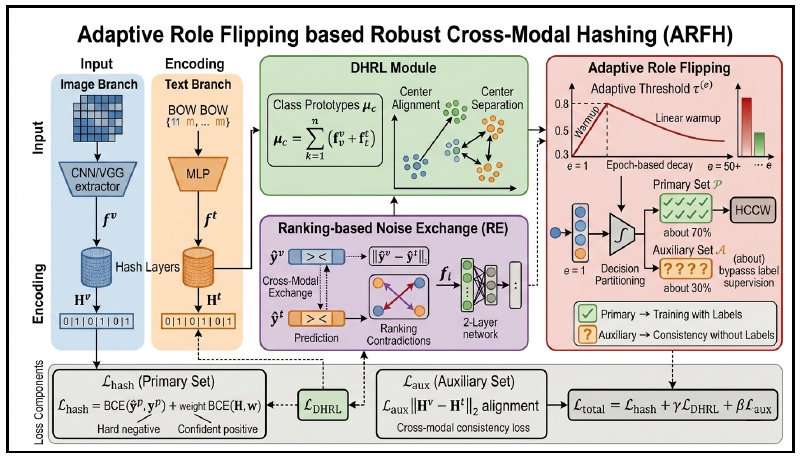

I develop methods for robust cross-modal retrieval and visual perception for agricultural robots.
I am pursuing a master's degree in Control Science and Intelligent Engineering at Nanjing University (NJU). Before joining NJU, I studied Automation at Nanjing Agricultural University.
Recent News
- : Our paper on robust cross-modal hashing (ARFH) was published online in the proceedings of FLINS-ISKE 2026.
- : Our paper on chicken behavior recognition (DualHet-YOLO) was published in Agriculture.
Research Interests
- Robust Cross-modal Learning: Developing representations and hashing methods for retrieval across modalities under noisy supervision.
- Visual Perception for Agricultural Robotics: Designing lightweight detection models for robotic inspection and poultry behavior recognition.
Education
-
2025 — Present, Nanjing University, Master's ProgramControl Science and Intelligent Engineering
-
2021 — 2025, Nanjing Agricultural University, Bachelor's ProgramAutomation
Selected Publications
Download BibTeXCross-modal Learning and Visual Perception
Adaptive Role Flipping Based Robust Cross-Modal Hashing
FLINS-ISKE 2026Lecture Notes in Computer Science 16756, pp. 546–563
Published online 9 July 2026 · Citation year: 2027
ARFH adaptively assigns noisy samples to training or auxiliary validation roles to improve the robustness of cross-modal hashing.
BibTeX
@inproceedings{Wang2027ARFH,
author = {Wang, Zihan and Fan, Wentao and Chen, Linwei and Li, Huaxiong},
title = {Adaptive Role Flipping Based Robust Cross-Modal Hashing},
booktitle = {Machine Learning and Knowledge Engineering for Decision Making},
editor = {Lu, Jie and Montero, Javier and Zhang, Yi and Xuan, Junyu
and Li, Tianrui and Mart{\'i}nez, Luis and Kerre, Etienne},
series = {Lecture Notes in Computer Science},
volume = {16756},
pages = {546--563},
year = {2027},
publisher = {Springer},
address = {Singapore},
doi = {10.1007/978-981-92-2497-5_32},
isbn = {978-981-92-2497-5},
note = {FLINS-ISKE 2026; first published online 9 July 2026}
}

ARFH framework · View full size
DualHet-YOLO: A Dual-Backbone Heterogeneous YOLO Network for Inspection Robots to Recognize Yellow-Feathered Chicken Behavior in Floor-Raised House
Agriculture 15(14), Article 1504 · 2025
DualHet-YOLO combines two heterogeneous backbones in a lightweight detector to recognize the behaviors and states of floor-raised chickens during robotic inspection.
BibTeX
@article{Zhang2025DualHetYOLO,
author = {Zhang, Yaobo and Chen, Linwei and Chen, Hongfei and Liu, Tao
and Liu, Jinlin and Zhang, Qiuhong and Yan, Mingduo
and Zhao, Kaiyue and Zhang, Shixiu and Zou, Xiuguo},
title = {{DualHet-YOLO}: A Dual-Backbone Heterogeneous {YOLO} Network
for Inspection Robots to Recognize Yellow-Feathered Chicken
Behavior in Floor-Raised House},
journal = {Agriculture},
year = {2025},
month = jul,
volume = {15},
number = {14},
pages = {1504},
doi = {10.3390/agriculture15141504},
url = {https://www.mdpi.com/2077-0472/15/14/1504}
}
Personal Interests
I enjoy playing basketball and served as captain of my college team at Nanjing Agricultural University.